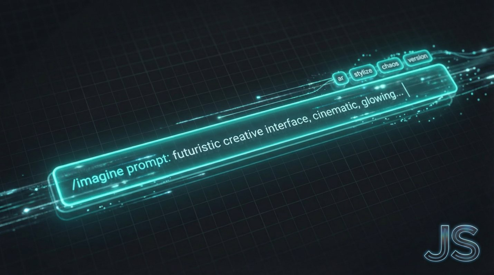

The Creative Shift January 14, 2026
How to Actually Control MidJourney, Not Just Prompt It

Most people think MidJourney results live or die by the prompt text.
That is only half the system.
The real leverage sits at the end of the prompt. The parameters. The codes. The constraints that quietly shape composition, style, and intent before the model ever starts imagining.
If you are not using them deliberately, you are letting the model make creative decisions for you.
Here is how to stop that.
WHY PARAMETERS MATTER MORE THAN WORDS
Prompt text describes what you want. Parameters define how the model should think while creating it.
Think of the prompt as a brief. The parameters are the creative direction.
They influence framing, chaos, realism, style strength, and even how literal the output will be.
Once you understand this, MidJourney becomes predictable. And predictable is powerful.
THE CORE MIDJOURNEY PARAMETERS YOU SHOULD ACTUALLY USE
Aspect Ratio. --ar
This controls composition, not just size.
--ar 1:1 is neutral and balanced.
--ar 4:5 is optimized for feeds and editorial layouts.
--ar 16:9 immediately pushes toward cinematic framing.
--ar 9:16 forces vertical storytelling and subject isolation.
Change the ratio and you change the story.
Stylize. --stylize or --s
This controls how much MidJourney injects its own aesthetic bias.
Lower values create literal, controlled results. Higher values push toward artistic interpretation.
Low stylize is for product, diagrams, systems, and brand consistency.
Higher stylize is for mood, concept art, and expressive visuals.
If your brand needs consistency, do not leave this to chance.
Chaos. --chaos
Chaos controls variation.
Low chaos means refinement. High chaos means exploration.
Use low chaos when you are locking a visual system. Use high chaos only when you are intentionally exploring directions.
Randomness is not creativity. It is a tool.
Quality. --q
This affects rendering time and detail density.
Higher quality does not mean better ideas. It means more polish.
For concepting, keep it low. For final assets, increase it deliberately.
Version Control. --v
Different versions behave differently.
Lock your version when building a system. Changing versions mid-project is like swapping lenses halfway through a shoot.
Consistency is a choice.
See content credentials
HOW I USE MIDJOURNEY PROFESSIONALLY
I do not chase perfect prompts.
I lock:
Aspect ratio
Stylize range
Chaos range
Version
Then I iterate within constraints.
That is how you build a visual language instead of a folder of experiments.
MidJourney becomes exponentially more useful when you stop treating it like a slot machine and start treating it like a studio tool.
For The Road
If your outputs feel inconsistent, it is not because MidJourney is unpredictable.
It is because you have not defined the rules.
Parameters are not optional. They are the system.
Once you control them, the model works for you instead of against you.
Want this kind of thinking on your brand?
The Creative Shift is the thinking behind the client work. Book a call, or read the original on LinkedIn.